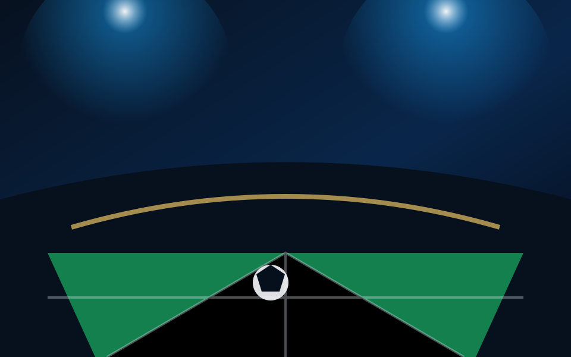
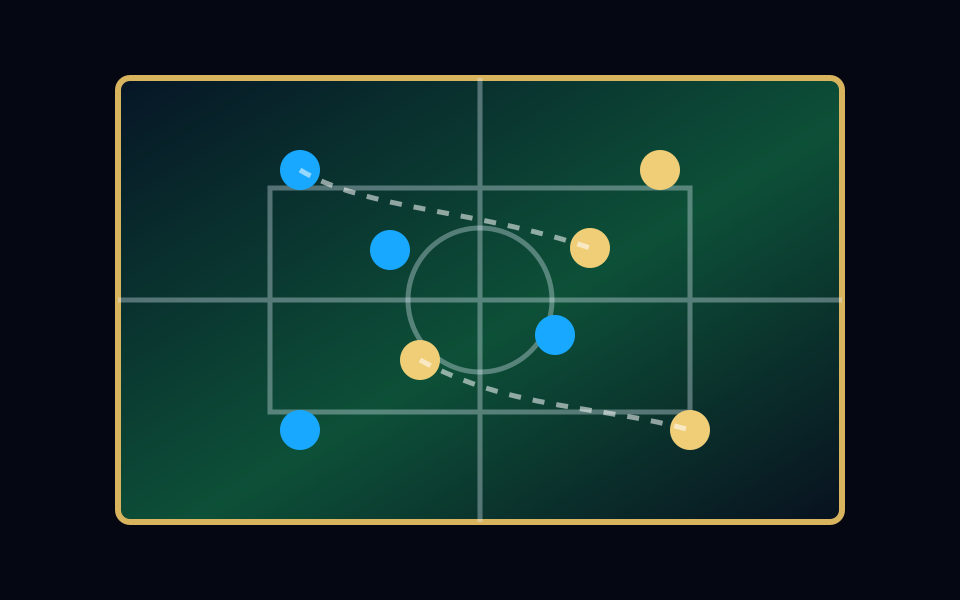

Derbi europeo
Solaris remonta en una noche de alto voltaje
Un gol al minuto 88 cambia la carrera por el liderato y eleva la intensidad de la fase final.
Temporada 2026 / Liga Elite
Noticias, estrellas, tabla y partidos simulados en una experiencia hecha para sentir la energia de una noche continental.
Ultimas noticias

Un gol al minuto 88 cambia la carrera por el liderato y eleva la intensidad de la fase final.
El mediocampista creativo podria convertirse en el fichaje mas importante de la ventana.

Los equipos con mayor recuperacion en campo rival dominan las estadisticas ofensivas.
Tabla general
| Equipo | PJ | G | E | P | Pts |
|---|
Talento de elite
Match engine
Genera un marcador ficticio entre clubes de la Nexus League con una animacion rapida estilo broadcast.
Listo para el pitazo inicial.